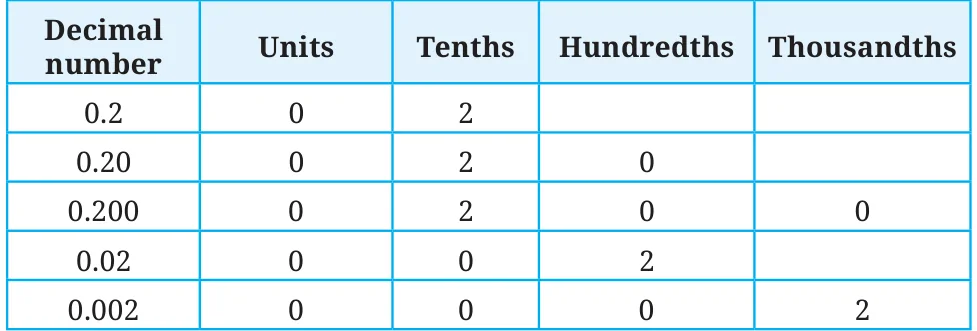
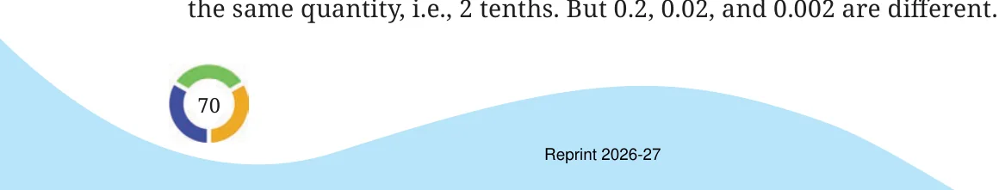
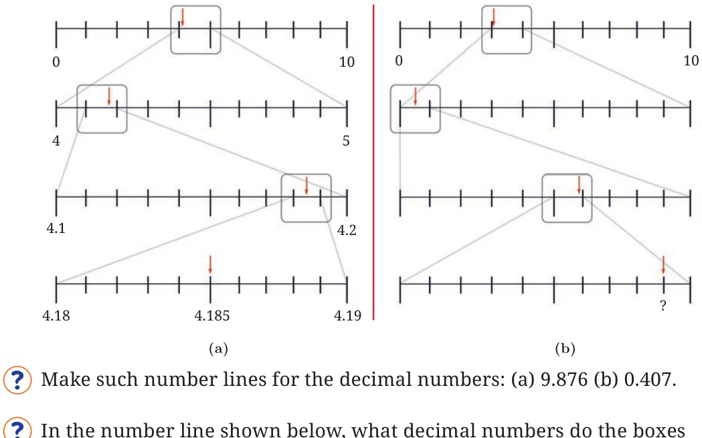
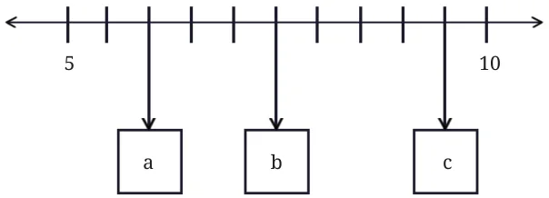
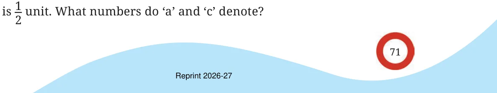
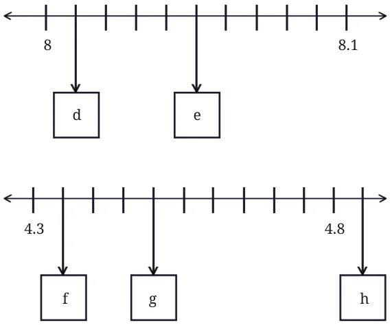
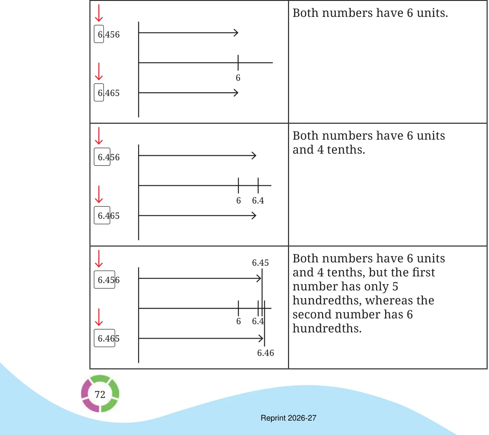
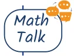

Sonu says that 0.2 can also be written as 0.20, 0.200; Zara thinks that putting zeros on the right side may alter the value of the decimal number. What do you think? We can figure this out by looking at the quantities these numbers represent using place value.

We can see that 0.2, 0.20, and 0.200 are all equal as they represent

Can you tell which of these is the smallest and which is the largest?
Which of these are the same: 4.5, 4.05, 0.405, 4.050, 4.50, 4.005, 04.50? Observe the number lines in Figure (a) below. At each level, a particular segment of the number line is magnified to locate the number 4.185.
Identify the decimal number in the last number line in Figure (b) denoted by ‘?’.

labelled ‘a’, ‘b’, and ‘c’ denote?

The box with ‘b’ corresponds to the decimal number 7.5; are you able to see how? There are 5 units between 5 and 10, divided into 10 equal parts. Hence, every 2 divisions make a unit, and so every division

Using similar reasoning find out the decimal numbers in the boxes below.

Which is larger: 6.456 or 6.465? To answer this, we can use the number line to locate both decimal numbers and show which is larger. This can also be done by comparing the corresponding digits at each place value, as we do with whole numbers. This comparison is visualised step by step below. Note that the visualisation below is not to scale.

We start by comparing the most significant digits (digits with the highest place value) of the two numbers. If the digits are the same, we compare the next smaller place value. We keep going till we find a position where the digits are not equal. The number with the larger digit at this position is the greater of the two.
Why can we stop comparing at this point? Can we be sure that whatever digits are there after this will not affect our conclusion?

Which decimal number is greater?
- 1.23 or 1.32
- 3.81 or 13.800
- 1.009 or 1.090